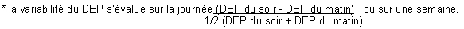

RÉSUMÉ DES CARACTÉRISTIQUES DU PRODUIT
ANSM - Mis à jour le : 30/05/2007
BUDENOSIDE AEROCID 400 microgrammes/dose, poudre pour inhalation
2. COMPOSITION QUALITATIVE ET QUANTITATIVE
Budésonide .................................................................................................................... 400 microgrammes
Pour une dose de poudre.
Pour la liste complète des excipients, voir rubrique 6.1.
Poudre pour inhalation.
4.1. Indications thérapeutiques
Traitement continu anti-inflammatoire de l'asthme persistant*.
*L'asthme persistant se définit par l'existence de symptômes diurnes plurihebdomadaires et/ou de symptômes nocturnes plus de 2 fois par mois.
Remarque: cette spécialité est particulièrement adaptée aux sujets chez qui il a été mis en évidence une mauvaise synchronisation main/poumon nécessaire pour une utilisation correcte des aérosols doseurs classiques sans chambre d'inhalation.
4.2. Posologie et mode d'administration
Posologie
La posologie est strictement individuelle. La dose initiale sera déterminée selon la sévérité de la maladie avant traitement et sera ensuite ajustée en fonction des résultats individuels. Il convient de toujours rechercher la posologie minimale efficace.
A titre indicatif:
· dans l'asthme persistant léger à modéré la dose initiale préconisée se situe entre:
o chez l'adulte: 400 et 800 μg par jour,
o chez l'enfant: 200 et 400 μg par jour.
(L'asthme persistant léger se définit par l'existence de symptômes diurnes plus de 1 fois par semaine et moins de 1 fois par jour et/ou de symptômes nocturnes plus de 2 fois par mois, un DEP ou un VEMS supérieur à 80 % des valeurs prédites, une variabilité du DEP* comprise entre 20 et 30 %).
(L'asthme persistant modéré se définit par l'existence de symptômes diurnes quotidiens, de crises retentissant sur l'activité et le sommeil, de symptômes d'asthme nocturne plus de 1 fois par semaine, une utilisation quotidienne de bêta2 mimétiques inhalés d'action brève, un DEP ou un VEMS compris entre 60 et 80 % des valeurs prédites, une variabilité du DEP* supérieure à 30 %).
· dans l'asthme persistant sévère la dose initiale préconisée se situe entre:
o chez l'adulte: 800 et 1600 μg par jour,
o chez l'enfant: 400 et 800 μg par jour.
(L'asthme persistant sévère se définit par l'existence de symptômes permanents, de crises fréquentes, de symptômes d'asthme nocturne fréquents, une activité physique limitée par les symptômes d'asthme, un DEP ou un VEMS inférieur à 60 % des valeurs prédites, une variabilité du DEP* supérieure à 30 %).

Rythme d'administration
La dose quotidienne est habituellement répartie en 2 prises par jour.
En cas d'asthme instable, la dose quotidienne pourra être répartie en 3 à 4 prises par jour en fonction de l'état clinique du patient.
Après plusieurs jours (ou semaines) de ce traitement lorsque l'état clinique du patient est amélioré, que les symptômes ont régressé et que l'asthme est contrôlé, la posologie minimale efficace devra être recherchée. Dans ce but, chez les patients présentant un asthme léger à modéré la dose quotidienne pourra être administrée en une prise par jour. Ainsi, chez l'adulte la dose pourra être diminuée à 200 μg par jour. En cas de déstabilisation de l'asthme, la dose et le nombre de prises devront être réaugmentés.
Mode d'administration
Inhalation par distributeur avec embout buccal.
Pour une utilisation correcte, il est souhaitable que le médecin s'assure du bon usage de l'appareil d'inhalation par le patient.
Le fonctionnement du dispositif est lié à l'inspiration: la poudre contenue dans le récipient est délivrée dans les voies aériennes lorsque le patient inspire au travers de l'embout buccal.
Il convient de recommander au patient:
· de lire attentivement le mode d'emploi dans la notice d'information jointe avec chaque inhalateur,
· d'inspirer à fond au travers de l'embout buccal pour assurer la diffusion optimale de la poudre dans les voies aériennes,
· de ne jamais souffler dans l'inhalateur,
· de se rincer la bouche à l'eau après les inhalations, afin de diminuer le risque de candidose oro-pharyngée.
Il convient d'informer le patient sur le fait que la quantité de produit délivré au cours de chaque inhalation étant très faible, l'administration ou le goût peuvent ne pas être perçus.
Hypersensibilité au budésonide ou à l'un des excipients.
4.4. Mises en garde spéciales et précautions d'emploi
Prévenir le patient que ce médicament n'est pas destiné à juguler une crise d'asthme déclarée, mais est un traitement continu de fond de la maladie asthmatique devant être poursuivi régulièrement, quotidiennement et aux doses prescrites, et dont les effets sur les symptômes de l'asthme ne se feront sentir qu'au bout de quelques jours à quelques semaines.
Si en dépit d'un traitement bien conduit une dyspnée paroxystique survient, on doit avoir recours à un bronchodilatateur bêta2 mimétique par voie inhalée d'action rapide et de courte durée pour traiter les symptômes aigus. Il conviendra d'en informer le patient et de lui préciser qu'une consultation médicale immédiate est nécessaire si, dans ce cas, le soulagement habituellement obtenu n'est pas rapidement observé après inhalation du bronchodilatateur bêta2 mimétique.
Si un patient développe en quelques jours une augmentation rapide de sa consommation en bronchodilatateurs bêta2 mimétiques d'action rapide et de courte durée par voie inhalée, on doit craindre (surtout si les valeurs du débitmètre de pointe s'abaissent et/ou deviennent irrégulières) une décompensation de sa maladie et la possibilité d'une évolution vers un asthme aigu grave (état de mal asthmatique).
Le médecin devra également prévenir le patient de la nécessité dans ce cas, d'une consultation immédiate. La conduite thérapeutique devra alors être réévaluée.
Le patient doit être averti que l'amélioration de son état clinique ne doit pas conduire à une modification de son traitement, en particulier à l'arrêt de la corticothérapie par voie inhalée, sans avis médical.
La croissance des enfants recevant une corticothérapie inhalée à long terme doit être surveillée régulièrement. En cas de ralentissement de la croissance, le traitement devra être réévalué en vue de réduire les doses du corticoïde inhalé. Il conviendra de soigneusement peser les bénéfices attendus d'une corticothérapie face aux risques éventuels de ralentissement de la croissance. L'avis d'un spécialiste pneumopédiatre peut être requis.
Des données limitées issues d'études cliniques à long terme suggèrent que la plupart des enfants et des adolescents traités par du budésonide inhalé atteindront leur taille adulte prédite. Toutefois, il a été observé un ralentissement initial léger transitoire de la croissance (environ 1 cm); généralement pendant la première année de traitement.
L'attention des sportifs sera attirée sur le fait que cette spécialité contient un principe actif pouvant induire une réaction positive des tests pratiqués lors des contrôles antidopage.
En cas d'infection bronchique ou de bronchorrhée abondante, un traitement approprié est nécessaire afin de favoriser la diffusion optimale du produit dans les voies respiratoires.
En cas de déstabilisation de l'asthme, ou de contrôle insuffisant des exacerbations d'asthme malgré des doses maximales de corticoïdes par voie inhalée, un traitement par corticothérapie par voie générale en cure courte doit être envisagé. Il est alors nécessaire de maintenir la corticothérapie inhalée associée au traitement par voie générale.
L'administration conjointe de corticoïdes par voie inhalée chez les asthmatiques sous corticothérapie orale au long cours (patients corticodépendants) ne dispense pas des précautions nécessaires lors d'une réduction des doses de corticoïde par voie orale. Celles-ci seront diminuées très progressivement et le sevrage devra être effectué sous surveillance médicale attentive (à la recherche de l'apparition de signes d'insuffisance surrénale aiguë ou subaiguë) se prolongeant au-delà de l'arrêt de la corticothérapie par voie générale.
4.5. Interactions avec d'autres médicaments et autres formes d'interactions
Associations à prendre en compte
+ Ritonavir, kétoconazole, itraconazole
Augmentation des concentrations plasmatiques du budésonide par diminution de son métabolisme hépatique par l'inhibiteur enzymatique, avec risque d'apparition d'un syndrome cushingoïde.
Ce médicament peut être prescrit au cours de la grossesse si besoin, quel qu'en soit le terme.
En effet, bien que les données animales aient mis, en évidence, comme avec d'autres corticoïdes, un effet malformatif, les études épidémiologiques sont rassurantes.
Les effets néonataux décrits avec la corticothérapie par voie générale (retard de croissance intra-utérin, insuffisance surrénale néonatale) n'ont pas été rapportés, à ce jour, lors d'une administration de corticoïdes par voie inhalée.
Les corticoïdes sont excrétés dans le lait maternel.
Les données disponibles semblent montrer une bonne tolérance pour l'enfant; cependant, le retentissement biologique ou clinique d'un traitement maternel de longue durée n'est pas évalué à ce jour.
4.7. Effets sur l'aptitude à conduire des véhicules et à utiliser des machines
Sans objet.
Effets locaux
· Fréquemment possibilité de survenue de candidose oropharyngée. Elle cède le plus souvent spontanément ou à un traitement approprié et il est exceptionnel qu'elle nécessite l'arrêt de la corticothérapie par voie inhalée. Son risque d'apparition augmente avec la dose utilisée et le nombre de prises. Il peut être prévenu par rinçage de la bouche à l'eau après inhalation.
· Possibilité de survenue de gêne pharyngée, de dysphonie, de raucité de la voix, pouvant être prévenues par rinçage de la bouche après inhalation.
· Rarement possibilité de: nervosité, agitation, dépression et troubles du comportement.
· Des réactions d'hypersensibilité avec manifestations cutanées ont été signalées avec le budésonide. De rares cas d'œdème facial et oropharyngé ont été rapportés.
· Comme avec d'autres produits inhalés, possibilité de survenue de toux et rarement de bronchospasme à la suite de l'inhalation. Dans ce cas, il conviendra d'interrompre le traitement et de prescrire d'autres thérapeutiques ou d'autres formes d'administration.
Effets systémiques
· Le risque de survenue d'effets systémiques liés à la corticothérapie inhalée est minime mais ne peut être exclu aux doses élevées. Ont été décrits avec la corticothérapie par voie inhalée des observations d'amincissement cutané, d'hématomes sous cutanés, de cataracte, de dépression des fonctions surrénaliennes biologiques (diminution du cortisol plasmatique et de la cortisolurie des 24 heures) et de raréfaction du tissu osseux. Les conséquences cliniques d'une administration à long terme notamment sur le tissus osseux et la croissance ne sont pas clairement établies.
· L'administration de fortes doses au long cours peut donc nécessiter une surveillance en particulier chez les enfants et les sujets âgés.
· En l'état actuel des connaissances, bien que la recherche de la posologie minimale efficace soit toujours recommandée, le risque à considérer en priorité est celui d'un contrôle insuffisant de l'asthme et devra toujours être pesé face à celui du retentissement systémique.
L'emploi de ce médicament à des doses très supérieures aux doses recommandées est le reflet d'une aggravation de l'affection respiratoire nécessitant une consultation rapide pour réévaluation thérapeutique.
5. PROPRIETES PHARMACOLOGIQUES
5.1. Propriétés pharmacodynamiques
Classe pharmacothérapeutique: GLUCOCORTICOIDE
ANTI-ASTHMATIQUE
Code ATC: R03BA02
(R: Système respiratoire)
Le budésonide est un glucorticoïde. En inhalation, il exerce une action anti-inflammatoire marquée sur la muqueuse bronchique.
Chez l'adulte, l'effet freinateur du budésonide sur l'axe hypophysosurrénalien ne se manifeste qu'à une posologie supérieure ou égale à 1600 μg/24 heures.
5.2. Propriétés pharmacocinétiques
Après inhalation, une partie de la dose est déglutie, l'autre partie pénètre dans les bronches ou elle exerce ses effets.
Le budésonide a un volume de distribution de 3 litres/kg. La fixation aux protéines plasmatiques est d'environ 85 à 90 %.
Le budésonide subit un important effet de premier passage hépatique (90 %) avec transformation en métabolites de très faible activité glucocorticoïde. Ces métabolites sont excrétés dans les urines, inchangés ou après conjugaison.
La clairance plasmatique est élevée et la demi-vie plasmatique après administration intraveineuse est de 2 à 3 heures.
5.3. Données de sécurité préclinique
Chez l'animal, la toxicité du budésonide est liée à une exacerbation de l'effet pharmacologique glucocorticoïde.
Des malformations ont été observées au cours des études de reproduction menées chez l'animal avec les glucocorticoïdes tels que le budésonide (fente palatine, malformation squelettiques). Toutefois, ces résultats expérimentaux observés chez l'animal ne sont pas extrapolables à l'homme aux doses recommandées.
Sans objet.
3 ans.
6.4. Précautions particulières de conservation
A conserver à une température inférieure à +30°C.
Ne pas réfrigérer.
6.5. Nature et contenu de l'emballage extérieur
Inhalateur-doseur à poudre.
L'inhalateur en plastique comprend un réservoir contenant la poudre pour inhalation, un système-compteur, un embout buccal et un capuchon anti-poussière.
L'inhalateur contient 50, 100 ou 200 doses de poudre.
6.6. Précautions particulières d’élimination et de manipulation
La poudre est inhalée en respirant par la bouche au moyen de l'embout buccal de l'inhalateur.
Ce système d'inhalation ne nécessite pas d'agitation avant emploi, ni amorçage. Il est équipé d'un compteur de doses restantes, numéroté de 2 en 2. Lorsque le compteur indique zéro, l'inhalateur est vide.
Avant toute utilisation, vérifiez sur l'affichage du compteur de doses que l'inhalateur n'est pas vide.
1. Tenez l'inhalateur capuchon vers le bas, et ouvrez-le en abaissant le capuchon au maximum. La dose est prête à être inhalée.
2. Expirez normalement. Ne pas expirer dans l'inhalateur.
3. Placez l'embout buccal dans votre bouche et refermez vos lèvres autour. Inspirez lentement et profondément par la bouche afin d'inhaler le produit. Vous pouvez percevoir un léger goût sucré.
4. Retirez l'inhalateur de votre bouche et retenez votre respiration pendant quelques secondes, puis respirez normalement.
5. Refermez l'inhalateur en replaçant le capuchon sur l'embout buccal. Chaque fois que le capuchon de l'embout est refermé, le nombre d'inhalation disponible diminue.
6. Rincez-vous la bouche après inhalation du produit.
Si vous devez prendre d'autres inhalations, répétez les étapes de 1 à 6.
Pour des instructions plus approfondies quant à l'emploi de l'appareil, consultez la notice destinée au patient qui se trouve dans chaque boîte.
7. TITULAIRE DE L’AUTORISATION DE MISE SUR LE MARCHE
Laboratoires de l'AEROCID
248 bis, rue Gabriel Péri
B.P. 126
94232 Cachan Cedex
8. NUMERO(S) D’AUTORISATION DE MISE SUR LE MARCHE
· 379 789-0 ou 34009 379 789 0 3: 50 doses de poudre pour inhalation avec inhalateur multidoses.
· 379 790-9 ou 34009 379 790 9 2: 100 doses de poudre pour inhalation avec inhalateur multidoses.
· 570 873-2 ou 34009 570 873 2 6: 200 doses de poudre pour inhalation avec inhalateur multidoses.
9. DATE DE PREMIERE AUTORISATION/DE RENOUVELLEMENT DE L’AUTORISATION
[à compléter par le titulaire]
10. DATE DE MISE A JOUR DU TEXTE
[à compléter par le titulaire]
Sans objet.
12. INSTRUCTIONS POUR LA PREPARATION DES RADIOPHARMACEUTIQUES
Sans objet.
Liste I.